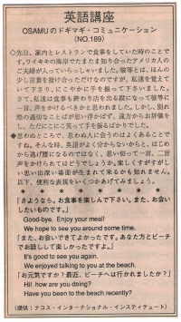

またお会いできてよかったです。
先日、家内とレストランで食事をしていた時のことです。ワイキキの海岸でたまたま知り合った、アメリカ人ご夫妻が入っていらっしゃいました。彼等とは、ほんの少し言葉を掛け合っただけなのですが、私達を覚えていて下さり、にこやかに手を振って下さいました。さて、私達は食事も終わり店を出る段になって彼等に、一言、声をかけるべきかと思われました。しかし、別れ際の適切なことばが思い浮かばず、遠方からお辞儀をし、ただにこにこ笑って手を振るばかりでした。
思わぬところで、思わぬ人に会うのはよくあることですね。そんな時、はじめから逃げ腰になるのではなく、思い切って、一言、二言、声をかけられてはどうでしょうか。楽しく、思い出深い場面が生まれるかも知れません。以下、便利な表現をいくつかあげてみましょう。
さようなら。お食事を楽しんで下さい。
また、お会いしたいものです。
Good-bye. Enjoy your meal!
We hope to see you around some time.
また、お会いできてよかったです。
あなた方と、ビーチでお話しして楽しかったですよ。
It's good to see you again.
We enjoyed talking to you at the beach.
お元気ですか？
最近、ビーチへは行かれましたか？
Hi! How are you doing?
Have you been to the beach recently?

| © 1995-2013 NACOS International Institute. All Rights Reserved. |